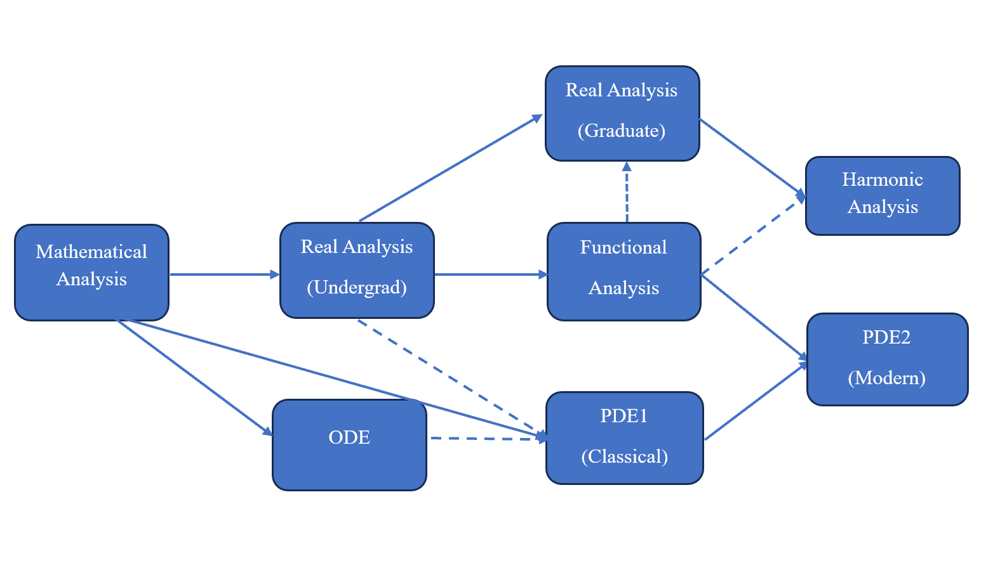

Regularly-offered basic Analysis and PDE courses at USTC
English Version|中文版
Regularly-offered basic Analysis and PDE courses (for undergraduates) at USTC
-
The School of Mathematical Sciences regularly offer the following courses (about Analysis and PDEs) for undergraduate students (not including those topic courses for graduate students).
Service course: Mathematical Analysis (A1)-(A3)
- Prefessional Compulsory Courses：
- ODE
- Real Analysis, PDE1(Classical PDEs), Functional Analysis
- Complex Analysis
- Undergraduate-Graduate Coherent Courses:
- Advanced Real Analysis, PDE2(based on Evans Part II), Basic Harmonic Analysis
- Several-Variables Complex Analysis
- Second-order linear Elliptic PDEs
- Topic courses (may not be regularly offered)
- Nonlinear elliptic PDEs, Nonlinear dispersive equations, PDEs in fluid dynamics, Differential dynamical systems, etc.
Below are theschedule for those fundamental courses (for undergraduates at USTC) about Analysis and PDEs (*: compulsory, #: selective but recommended, no mark: selective)：
| Year\Semester | Fall (Sem 1) | Spring (Sem 2) |
| Year 1 (Freshmen) | Mathematical analysis (A1)* | Mathematical analysis (A2)* |
| Year 2 (Sophomore) | Mathematical analysis (A3)*, ODE* | Real analysis*, Complex analysis* |
| Year 3 (Junior) | Functional analysis*, PDE1#, Advanced real analysis# | PDE2, Harmonic analysis |
| Year 4 (Senior) | Linear elliptic PDEs, Several-Variables complex analysis |
Learning order, my (unofficial) syllabi, and reference books
-
The picture below presents the order of learning APDE courses.

{kind=link}
Here “solid line: A→B” means "A should be the prerequisite of B"，“dashed line: A→B” means you can learn A, B at the same time, or only a small part of A is used in B.
Please be very careful about you GPA and seriously consider whether you want to go beyond the official study plan, and to what extent you want to go beyond, and to what extenct you are able to exceed the official study plan.
If you are very interested in analysis and PDEs and want to go beyond the official study plan, then the following schedule may be a possible one at USTC. Yet, you don't have to take all these courses at a very early stage.Instead, the best way is to find suitable references and devote your time to learning them by yourself, during which you can consult professors or those senior students who study in related areas for further advices.
| Year\Semester | Fall (Sem 1) | Spring (Sem 2) |
| Year 1 (Freshmen) | Mathematical analysis (A1)* | Mathematical analysis (A2)*, Real analysis* |
| Year 2 (Sophomore) | Mathematical analysis (A3)*, ODE*, (PDE1# or Advanced real analysis# > Functional analysis*) | (Harmonic Analysis or/and PDE2) |
| Year 3 (Junior) | (PDE1# or Advanced real analysis# or Functional analysis* or Linear elliptic PDEs) | (Harmonic Analysis or/and PDE2) |
| Year 4 (Senior) |